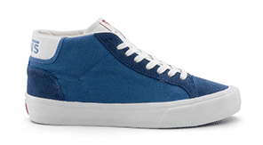
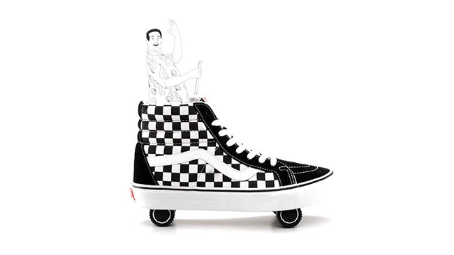
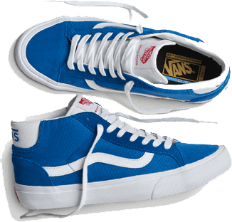
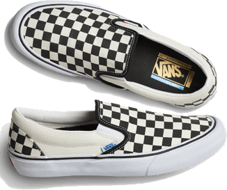
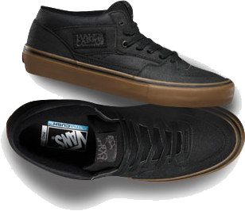
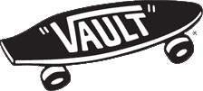
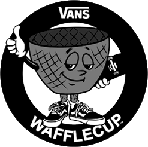
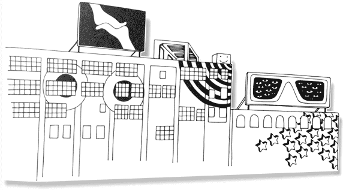

Off The Wall since 1966
1966
Brothers Paul Van Doren and Jim Van Doren along with partners Gordon Lee and Serge Delia open The Van Doren Rubber Company, Anaheim, Calif., for business on March 16. Vans #44 deck shoes, now known as the Authentic, are born.
1974
Skateboarders who like Vans’ rugged make-up and sticky sole are seen sporting Vans all over Southern California.
1976
The Vans #95, now known as the Era, with a padded collar and different color combinations, is designed by Tony Alva and Stacy Peralta and becomes the shoe of choice for a generation of skateboarders.
Vans’ “Off the Wall” logo makes its debut.
1977
Vans #36, the Old Skool, debuts with the now famous Vans Sidestripe. The Old Skool is Vans’ first skate shoe that incorporated leather panels for increased durability. What started as a random doodle by Paul Van Doren was originally referred to as the “jazz stripe” and has become the unmistakable hallmark of the Vans brand.
The Vans #98 is also introduced and with the help of skateboarders and BMX riders, Vans Classic Slip-Ons become the rage in Southern California and will come to be the original Slip-On silhouette that will be known as an icon for generations.

1978
The Sk8-Hi, was introduced in 1978 as "Style 38", and showcased the now-iconic Vans Sidestripe on yet another innovative silhouette. The Sk8-Hi took skate functionality to the next level—above the ankle, where skateboarders used and abused their lower extremities the most. The Sk8-Hi not only protected bones from skateboards catapulted at them but also brought a whole new look to the park.

1979

One of the most innovative skateboarders of all time, Tony Alva brought his brash, aggressive influence and ideas to create modern skate culture. The Mid Skool ’79 continues what T.A. started—skater-driven design built for progression.
1982
Vans Classic Slip-Ons gain international attention and appeal when they are worn by Sean Penn in the film Fast Times at Ridgemont High.
The instantly recognizable checkerboard pattern became an icon over night.

1988

The Vans Steve Caballero, the first signature skate shoe, is introduced. The Half Cab went on to become one of the most iconic and culturally significant shoes in the history of skateboarding.
2003
Vans launches the Vault by Vans collection, an offering of timeless since66 melding the worlds of high-fashion and premium design to Vans’ classic silhouettes. Today, Vault by Vans continues to forge innovative partnerships, with past collaborators including fashion giants such as Marc Jacobs, and contemporary artist Takashi.

2012

Vans introduces the first vulcanized cupsole. The new WAFFLECUP™ technology combines the best of both worlds with the support and durability of a cupsole and the superior boardfeel and grip of the traditional Vans vulcanized shoe.
2014
In August, House of Vans London, a 3,000sqm art, music and skate space under Waterloo station opens in London’s creative playground. Representing the eclectic diversity of London and the cultures that have embraced Vans from its humble beginnings, through five decades, House of Vans opens with a showcase of creativity.
2015
In May 2015, Vans makes skateboarding history with the highly anticipated launch of PROPELLER: A Vans Skateboarding Video, Vans' first-ever skateboarding film. This momentous occasion saw valuable international exposure for the Vans Pro Skate Team and even more global recognition for Vans' storied legacy in skateboarding. PROPELLER becomes one of the fastest-selling skate films to ever hit iTunes.

2016